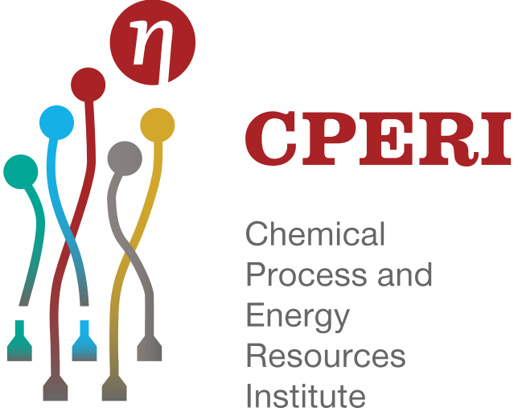

Experience
3/2026 –
present

present
Founding Software Engineer
Aurion · Athens
- Architected and implemented a multi-tenant integration with legacy accounting systems and led migrations for 6 clients from on‑prem to AWS, cutting clients’ daily accounting/task processing time by ~50% by automating reconciliation workflows
- Reduced deployment time from ~30 minutes to under 5 minutes by setting up company-wide infrastructure, including CI/CD pipelines, secure VPN access, AWS infrastructure-as-code with Terraform and SQL Server DB administration
- Reduced client onboarding time by ~ 50% by creating a Python CLI tool that automated tasks
12/2024 –
2/2026

2/2026
Backend Software Engineer
Dialectica · Athens
- Minimized time spent by clients on interviewing by ~75% by building an AI chatbot system for interviewing with Ruby on Rails
- Reduced feature development time by ~20% by creating a suite of reusable RSpec test components adopted across the backend team, standardizing test patterns and cutting boilerplate in new services
- Reduced local environment setup time from a few hours to under 5 minutes by creating a Go CLI tool that orchestrates microservices, provisioning dependencies and standardizing configuration for the backend team
10/2023 –
11/2024

11/2024
Backend Software Engineer
Skroutz · Athens
- Owned the launch of the Romania delivery backend, enabling processing of thousands of orders per week with 99%+ success rate, by extending the core Ruby on Rails service and integrating it with country-specific logistics flows
- Led integrations with 3 new 3rd-party courier services, reducing manual shipment handling by ~40% by designing robust API adapters, error-handling workflows, and monitoring for delivery failures
1/2021 –
8/2023

8/2023
Associate Software Engineer
The Signal Group · Athens
- Increased voyage profitability by enabling commercial teams to simulate routing and pricing scenarios via a Python-based voyage simulation tool, which was used in daily planning for a fleet of 20+ vessels
- Increased developer productivity by developing maintaining internal Python libraries
- Increased developer productivity by an estimated 10–15% by developing and maintaining shared Python libraries used across 5+ internal services, consolidating common data-access and validation logic and reducing duplicate code in new features
6/2020 –
12/2020
12/2020

Research Assistant
Centre for Research and Technology Hellas · Thessaloniki
- Worked at the Lab of Environmental Fuels and Hydrocarbons on creating MATLAB simulation models for the Fluid Catalytic Cracking process.